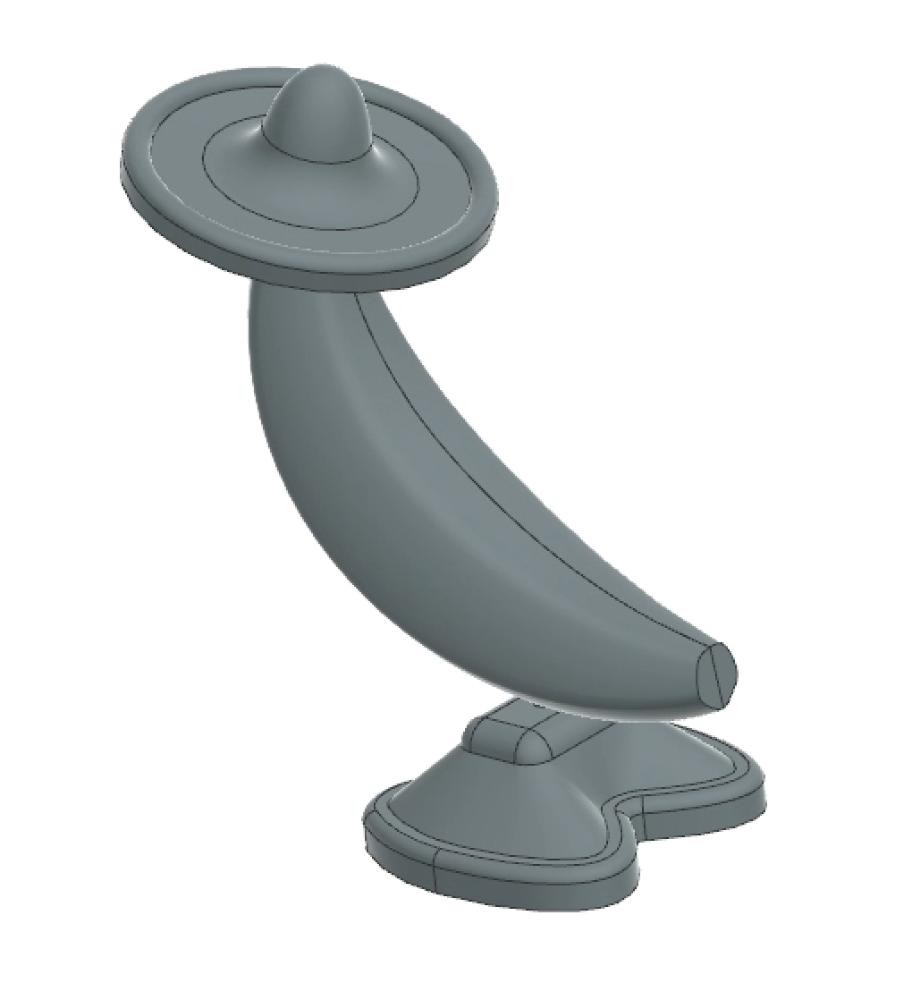
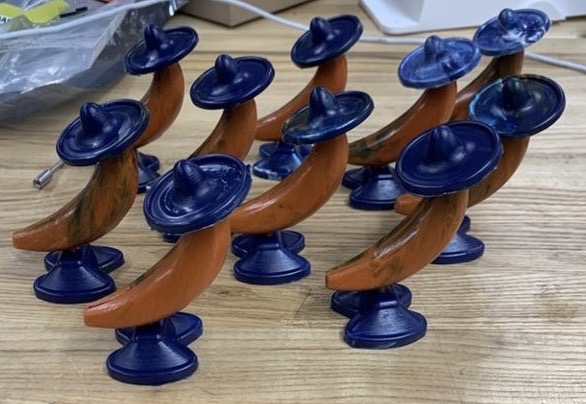

Mr. Banana Head
Class project at Northwestern
Inception of Mr. Banana Head
The goal of this project was to make a plastic, multi-part, injection molded toy. The basis of the idea had to be wild and wacky, as if a third grader had dreamed up the idea. I came up with the idea of a Mr. Potato Head-esque cowboy character with a banana for the body.
CAD Model Iterations
I took the idea for the boots and made multiple CAD models using the software NX. Each iterative model improved on how the boots connected with the banana body. I worked on the details to ensure our model could stand and the part looked like boots. I took into consideration the necessary part thickness for injection molding, and limitations of our CNC machining process to make a seamless part.


Machining the Molds
I learned the ins and outs of the Haas CNC machines and machined two core and two cavity molds out of aluminum. The tricky part was to make the surface finish as pristine as possible for a better-looking final product while also making the CAM code efficient. I made many mistakes that required us to start over in machining, but this ensured I was comfortable around the machine, and could teach it to my teammates.
Injection Molding and Final Product
I took the molds and aligned them properly in the injection molding machine to ensure an even part thickness. We produced 20 injection molded parts and assembled them. The boots fit perfectly on the interface of the banana, just as I had designed.